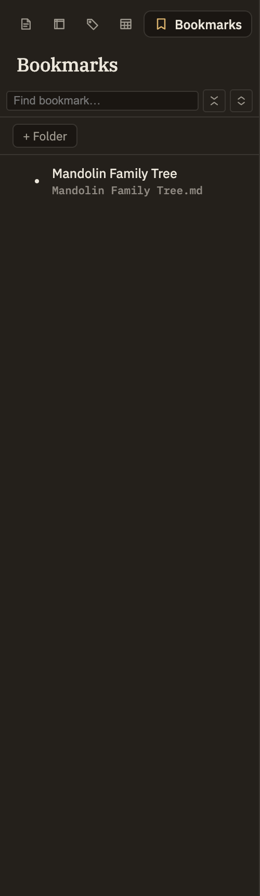

Docs/Left sidebar/Bookmarks
Bookmarks
The Bookmarks tab is a folder tree of saved places you want to return to — a whole note, a section under a heading, or an exact line. Click any entry and Minerva opens the note and jumps straight to that spot. Unlike Notes or Tags, nothing appears here automatically — every entry is one you chose to save.
Creating a bookmark
You make bookmarks from right-click menus. There are three kinds, depending on how precise you want to be:
New bookmarks appear at the top level of the tree. From there you can drag one onto a folder to file it away, or make a folder first with the + Folder button in the panel header.

Jumping to a bookmark
Click any bookmark to go there. A whole-note bookmark opens the note; a section bookmark opens the note and scrolls to the heading; a line bookmark opens the note and drops your cursor at the saved spot, centered in view and ready to type.
A line bookmark remembers the exact position it had when you made it. If you later add or remove a lot of text above that line, the bookmark can land you a little off — a few lines away, or mid-word. Renaming or moving the note, or renaming the heading a section bookmark points at, is always safe: those bookmarks follow along automatically. It's only heavy editing above a saved line that can throw it off.
Renaming, moving, and deleting
Right-click any bookmark or folder to Rename or Delete it. Renaming changes only the label in the tree — it doesn't change where the bookmark points. To reorganize, drag a bookmark onto a folder to file it inside, or onto empty space to move it back to the top level. Deleting a folder removes everything inside it, with no confirmation — a bookmark is just a pointer to a note, never the note itself, so removing one is harmless.
The search box in the panel header filters the tree to matching names, and the header also has controls to expand or collapse the whole tree at once.